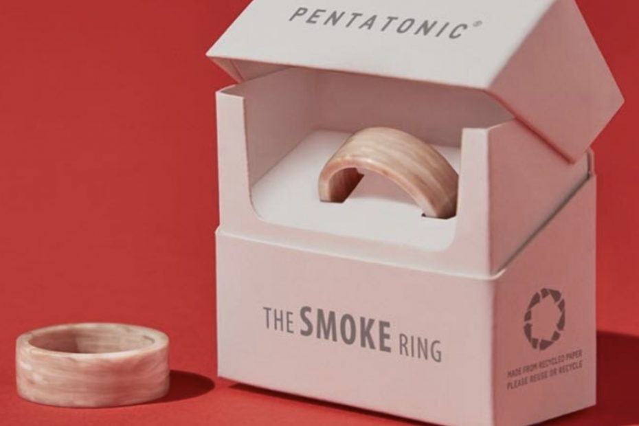
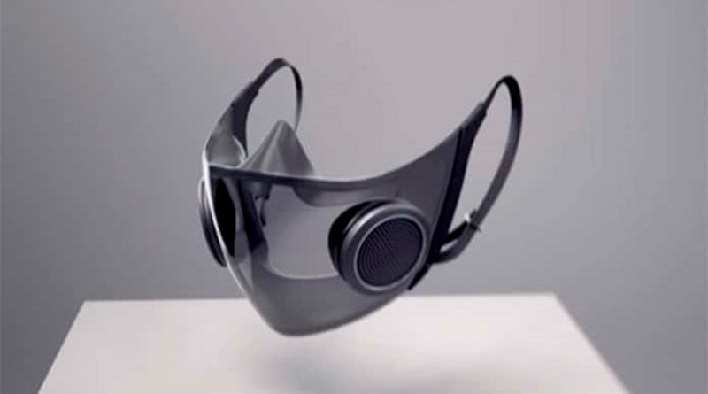

Hechos de colillas de cigarros

Reciclar basura y transformarla en objetos totalmente nuevos y funcionales siempre resulta una hazaña sorprendente. Sobre todo si hablamos de desechos que contaminan
el medio ambiente, como el plástico. Por fortuna, hoy en día existen muchos proyectos que se interesan en ayudar a cuidar el planeta. Esta vez te presentamos una empresa que está revolucionando
sus métodos de producción con productos hechos con colillas de cigarro, ya que las usa para crear muebles, accesorios y muchas otras cosas a partir de estas.
Entre los productos que han diseñado se encuentran muebles hechos con plástico reciclado, tela hecha de botellas PET y vasos hechos de pantallas de celulares inteligentes. Lo más sorprendente es que lanzaron una colección utilizando residuos de colillas de cigarrillos.
Las colillas de cigarro son el principal desecho que se puede encontrar en los océanos, lo que les motivó a desarrollar sus productos. Uno de ellos es un anillo hecho con 400 colillas recicladas. Para realizarlo utilizaron el acetato de celulosa que se encuentra en los filtros.
Aseguran que es una forma de devolver la basura a la mano de quien la desechó, “pero en forma de un hermoso anillo con acabado de mármol”.
Entre sus planes está seguir sacando provecho de las colillas en la fabricación de productos
como ganchos para ropa o sillas elegantes para el hogar. Aunque hasta ahora no han revelado más detalles
sobre esto. Tendremos que esperar un poco más para conocer este y más
productos innovadores hechos con colillas de cigarro que seguramente estarán fabricando en un futuro cercano.
VIDEO
Cubrebocas digital

Proyecto Hazel es otro concepto novedoso que presentó Razer. Se trata de una mascarilla o barbijo inteligente que tiene efectos lumínicos, así como parlantes y micrófono que buscan proyectar mejor la voz del usuario para mejorar la comunicación. Además es transparente para facilitar la lectura de labios.
VIDEO